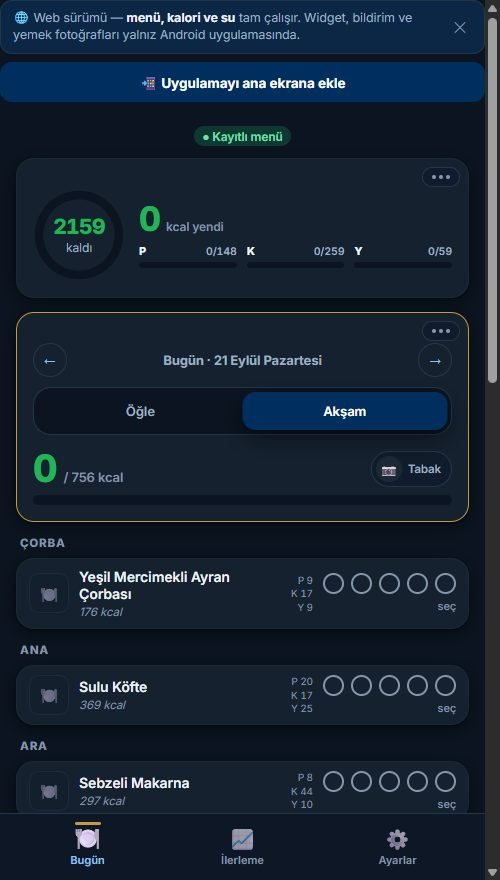
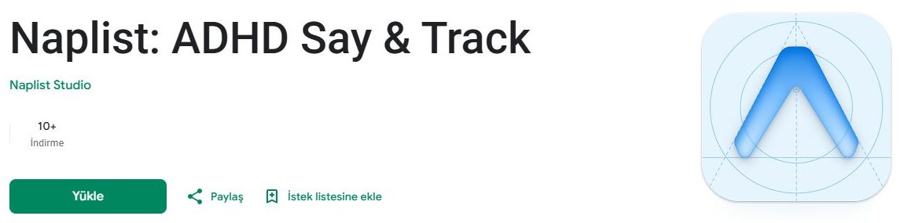
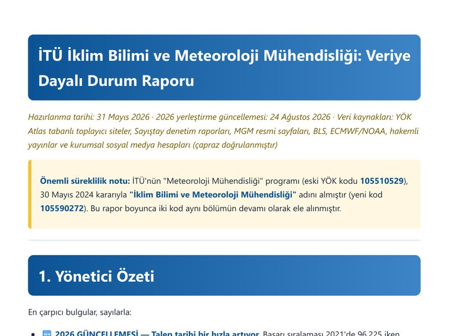
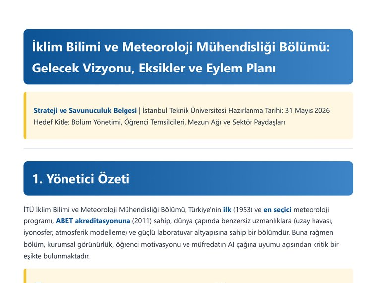
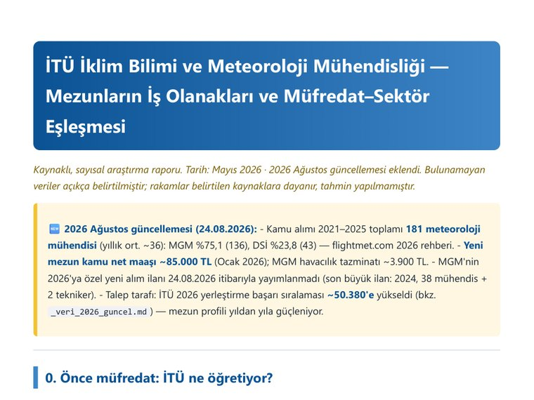
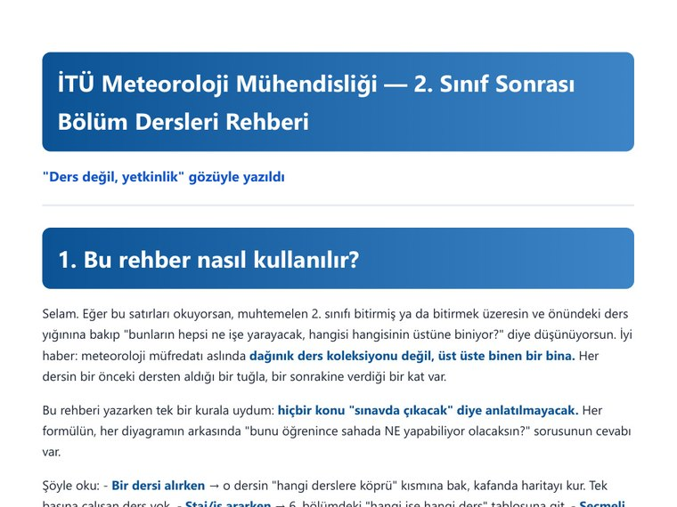

Meteoroloji mühendisliği · yazılım · medya üretimi

İTÜ Meteoroloji Mühendisliği · 3. sınıf
Ömer Faruk Akıncı
Okuduğu bölümü çalışan ürüne çeviren bir öğrenci.
ÖA
Ömer Faruk
Merhaba. İTÜ Meteoroloji Mühendisliği okuyorum ve öğrendiğimi
çalışan ürüne çevirmeye çalışıyorum. Üç uygulama yazdım,
biri Google Play'de yayında.
Bölümümün iki etkinliğinin canlı yayınını tek başıma
kurdum; öğrenci temsilcisi olarak bölümün durumunu veriyle araştırıp
fakülteye bir dosya sundum. Aşağıda hepsinin özeti var — merak
ettiğinize tıklayın.
Üçünü de tek başıma yazdım. Her birinin kendi derdi, kendi dili var —
o yüzden burada da her biri kendi görüntüsüyle duruyor.
YolHava
Web'de canlıPlay Store'da değil
ÖA
Normal hava durumu uygulamaları tek bir noktayı gösterir.
Ama yola çıkan biri için doğru soru bu değil.
YolHava rotanızı ve kalkış saatinizi alıp o noktadan
geçeceğiniz anda karşılaşacağınız havayı hesaplıyor —
"14:20 civarında Bolu'da kuvvetli yağmura girersin" gibi.
6.4 sürümüne ulaştı. Android paketi hazır ama mağazaya çıkaramadım;
sebebini sayfasında açıkça yazdım.
Bu uygulamayı kendi derdimden yazdım. Yemekhanede ne
çıktığını ve ne kadar kalori aldığımı takip etmek istiyordum;
bütçesi sınırlı bir öğrenci için bu bir merak değil,
gerçek bir hesap.
Günün menüsünü çekiyor, her yemeğin kalorisini ve makrolarını
gösteriyor. "Ne kadar yedin?" sorusunu baloncuklarla
soruyor — porsiyonu tartmaya gerek yok.
Kalan kaloriye göre öğün önerisi çıkarıyor, su ve adım hedefini
takip ediyor. Android sürümünde ek olarak ana ekran bileşeni ve
bildirimler var.
Solda günün menüsü ve kalori takibi, sağda ilerleme ekranı.
Naplist — DEHB görev takibi
Google Play'de yayında
ÖA
Dikkat dağınıklığıyla görev takibi yapmak zor bir iş; mevcut
uygulamaların çoğu daha fazla kurulum istiyor.
Ben tersini denedim: konuş, gerisini uygulama
halletsin.
Sesle görev ekleme, takvim entegrasyonu, hatırlatıcılar.
Tamamen yerel çalışıyor: veri cihazdan çıkmıyor, hesap yok,
reklam yok.

Google Play mağaza sayfası — yayıncı "Naplist Studio", uygulama indirilebilir durumda.
Mağazadaki uygulama görselleri: takvim senkronu, sesle görev ekleme, odak modu, öncelik görünümü.
02 · Bölümüm için
Yayın ve temsilcilik
Kendi projelerim dışında, bölümüme dönük iki iş yaptım: etkinliklerinin
canlı yayınını kurdum ve bölümün durumunu veriyle araştırıp bir dosya
hazırladım.
Bölümümün canlı yayınları
İki etkinlik
ÖA
Bölümümün iki ayrı etkinliğinin canlı yayınını
tek başıma kurdum ve yürüttüm: HAVAMET 360 Çalıştayı
(Kasım 2025, dört gün) ve Dünya Meteoroloji Günü
(Mart 2026).
İkisinde de kamera, ses, ışık ve sahne geçişleri bendeydi;
yayın grafiklerini de ayrı ayrı ben tasarladım.
Yukarıdaki fotoğraf kurduğum yayın masası.
Ne ücret aldım ne ders kredisi. HAVAMET kaydında
hocamız bu görevi bana atfederek ismimi anıyor.
Bir kez yapılan iş şans olabilir; ikincisinde çağrıldıysanız
iş güvenilirdir. Bunu böyle görüyorum.
Üst sıra kurduğum yayın masası, alt sıra iki etkinlik için
hazırladığım grafikler.
Bölüm araştırması ve savunuculuk dosyası
10+ rapor
ÖA
Bölüm öğrenci temsilcisi ve UUBF Birim
Kalite Komisyonu üyesi olarak görev yaptım. Bu görevi
toplantıya girip çıkmak olarak görmedim.
Bölümün nerede olduğunu veriyle çıkardım: YÖK Atlas
yerleştirme verileri, müfredat karşılaştırması, mezun istihdam
haritası. Sonra bunları bölüm başkanlığına ve fakülteye
sundum.
Bölümün taban başarı sıralaması — araştırmamın ana bulgusu
Yıl
Başarı sıralaması
Değişim
2021
96.225
—
2023
74.276
↑ iyileşme
2025
56.627
↑ iyileşme
2026
50.380
Beş yılda ~46.000 sıra
Bulgu şu: "kimse bu bölümü tercih etmiyor" dönemi kapandı.
2025'te Türkiye'deki üç meteoroloji programının üçü de ilk kez doldu.
Sorun artık öğrenci çekmek değil — gelen daha nitelikli
öğrenciyi tutmak ve iyi eğitmek.
Bunun üzerine bir dosya hazırladım: istatistik ve karşılaştırma
raporu, iş olanakları haritası, bölüm tarihçesi, akademisyen
rehberi, ders iyileştirme önerileri, aday öğrenciler için tanıtım
sunumu ve yeni öğrenciler için bir kılavuz. Hepsini bölüm
başkanlığına, on öğretim üyesine ve dekanlığa ilettim.
Bir açıklık
Bu çalışma bir anket değildir; öğrencilere soru sorup
veri toplamadım. Yöntemim kurumsal ve istatistikseldi: YÖK Atlas
yerleştirme verileri, müfredat incelemesi ve istihdam taraması.
Olmayan bir veriyi varmış gibi sunmak istemiyorum.

Durum raporunun yönetici özeti — bulgular sayılarla, kaynaklar
çapraz doğrulanmış.
Okuduğum bölümün benden sonraki hâliyle de ilgileniyorum;
bu dosyayı o yüzden hazırladım.



Dosyadaki diğer raporlar: vizyon ve eylem planı, iş olanakları
haritası, yeni öğrenciler için kılavuz.
03 · Alan dışı
Fotoğraf
ÖA
Fotoğraf ve video çekiyorum; bu alanda ücretli işler
yapıyorum — 2026 baharında İşkur, Ford Otosan, düğün ve
mezuniyet çekimleri dâhil sekiz iş.
Sempozyumlarda hem kamerayı kullanabilmemin hem de yayın
grafiklerini kendim hazırlayabilmemin sebebi bu birikim.
Meteoroloji ile medya üretimini bir arada bilmek, bölümümde
pek rastlanan bir birleşim değil.
Sempozyumda kullandığım geniş açı sahnesi — kadrajı, ışığı ve yayın
çerçevesini kendim kurdum.
Çektiğim fotoğrafların tamamı Instagram hesabımda. Buraya yalnızca kendi
hazırladığım görselleri koydum; salondaki kişilerin fotoğraflarını
izinleri olmadan yayınlamak istemedim.
Hedefim meteoroloji mühendisliğini veri ve yazılım
tarafıyla birleştirmek: sayısal hava tahmini modellerinin
çıktılarını makine öğrenmesiyle iyileştirmek üzerine çalışmak
istiyorum.
Bu ikisini birden bilen mühendis bu ülkede hâlâ az;
faydalı olabileceğim yer orası.
Buraya koyduğum işlerin ortak noktası şu: hiçbiri ödev değildi.
Her biri, karşılaştığım gerçek bir sorunu çözmek için yazıldı —
yolda hava tahmini, yemekhanede kalori takibi, dikkat dağınıklığıyla
görev takibi, bölümün nerede durduğunu bilmek.
Öğrendiğim şeyi çalışan bir ürüne çevirebilmek benim
için mühendisliğin tanımı. Bundan sonra da böyle çalışmak istiyorum.
İletişim
Ulaşmak için
Projeler, iş birliği ya da soru için yazabilirsiniz.